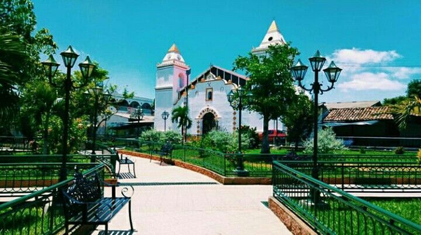
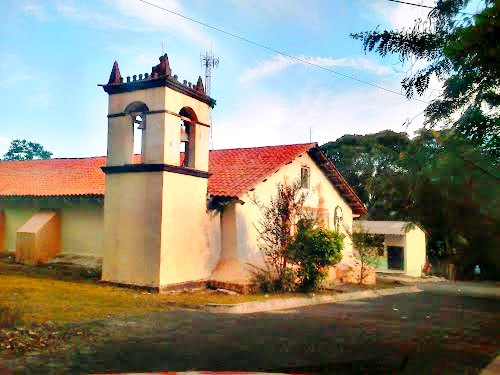
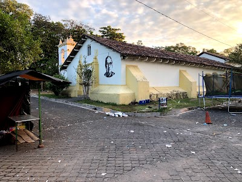

Es un departamento de El Salvador ubicado en la zona oriental del país. Limita al norte con la república de Honduras; al sur y al oeste con el departamento de San Miguel, y al sur y al este con el departamento de La Unión. Su cabecera departamental es San Francisco Gotera.2 Morazán comprende un territorio de 1 447 km² y cuenta con una población de 252 500 habitantes.



...
Historia
En el departamento todavía se conservan rastros de la presencia de los paleoindios —primeros pobladores de El Salvador— en la Cueva del Espíritu Santo, un sitio arqueológico con pinturas rupestres en las cercanías del municipio de Corinto. En la época previa a la conquista española, Morazán estuvo habitado por indígenas lencas.
Geografia
El departamento se encuentra en la parte nororiental de El Salvador. Su territorio se encuentra a una altitud de entre 500 y 1000 metros sobre el nivel del mar y tiene una topografía relativamente accidentada. Entre las elevaciones más importantes se encuentran el Cerro El Pericón, cerca de la frontera con Honduras; y el Cerro Cacahuatique, siendo este el punto más alto de todo el territorio ubicado a 1.663 msnm.
Religion
En Morazán hay 2 religiones que se practican mucho, siendo éstas el Catolicismo y el Protestantismo. El Catolicismo representa el 50% de la población y el Protestantismo representa el 38%, mientras que el 10% de la población no pertenece a ninguna religión y el 2% pertenece a otras religiones.
...
Todos los derechos reservados
Desarrolladores:
Orellana, Fernando Ernesto BO200360
Diaz Garcia, Jorge Antonio DG101201
Renderos Ramos, Ronald Ernesto RR150535
Rubio Leon, Hollman Alexander RL201130
Ventura Alvarenga, Roberto Alejandro VA210756